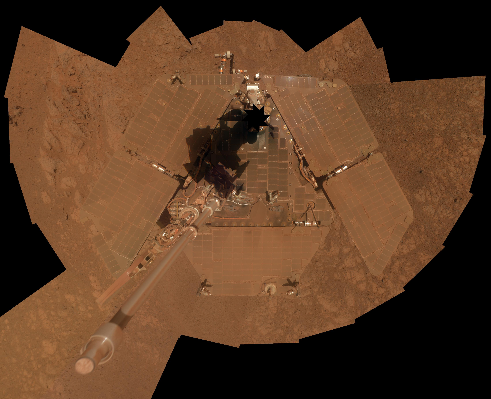
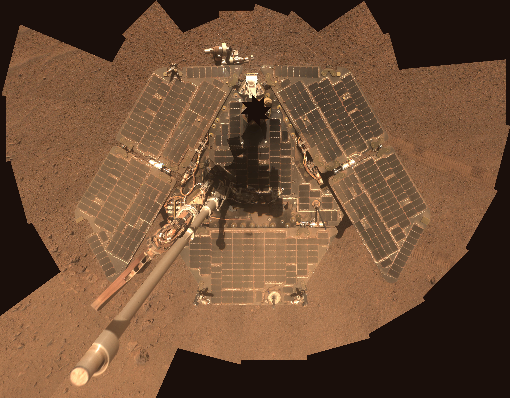

EVENT · 2014
消えかけた電力
2014年1月。太陽光で動くオポチュニティは、パネルにほこりが積もり、1日の発電量が375 Whを下回っています。数か月後、管制チームは予想外の変化を目にします。
管制ログ
2014年1月
375 Wh未満太陽光パネルにほこりが堆積。清掃専用の装置はありません。
NASAの記録
風がパネルのほこりを吹き払った
2014年1月375 Wh未満
2014年4月中旬620 Wh超


NASA/JPL-Caltech/Cornell/Arizona State University
観測からわかること
- 風による自然清掃（Cleaning Event）で、パネルを覆っていたほこりの一部が取り除かれました。
- NASAは、パネルがきれいになったことと、日が長くなったことの両方を発電量増加の要因に挙げています。発電量だけでは、それぞれの寄与はわかりません。
- 電力回復で活動に使える余裕が増えました。火星では、パネルに積もるほこりと、大気中で日光を遮るほこりの両方が発電に影響します。